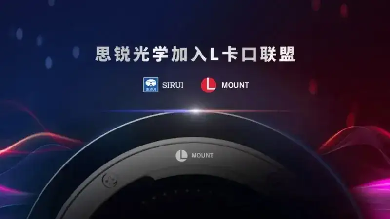
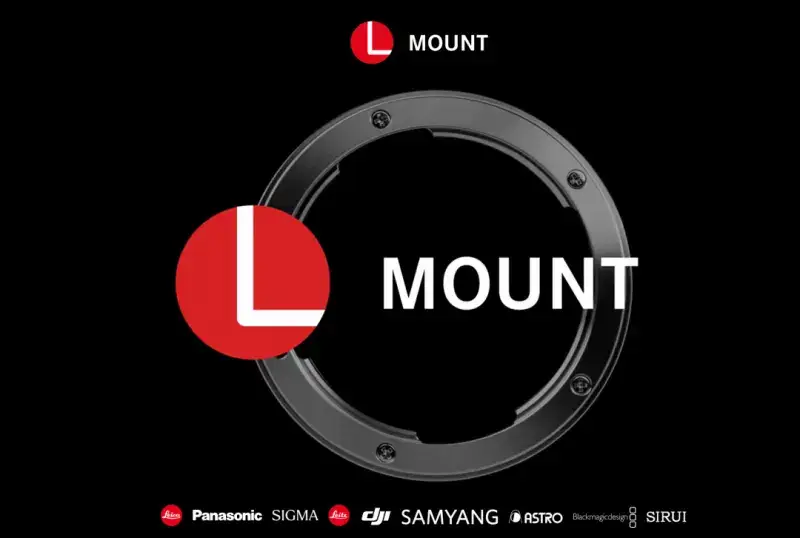
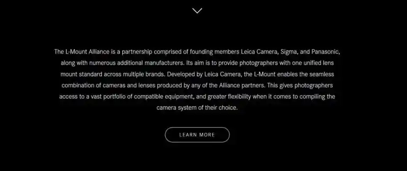
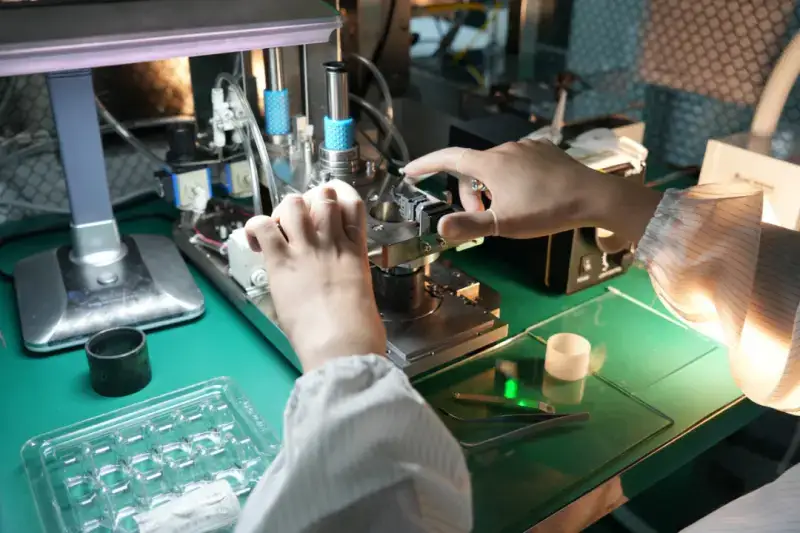
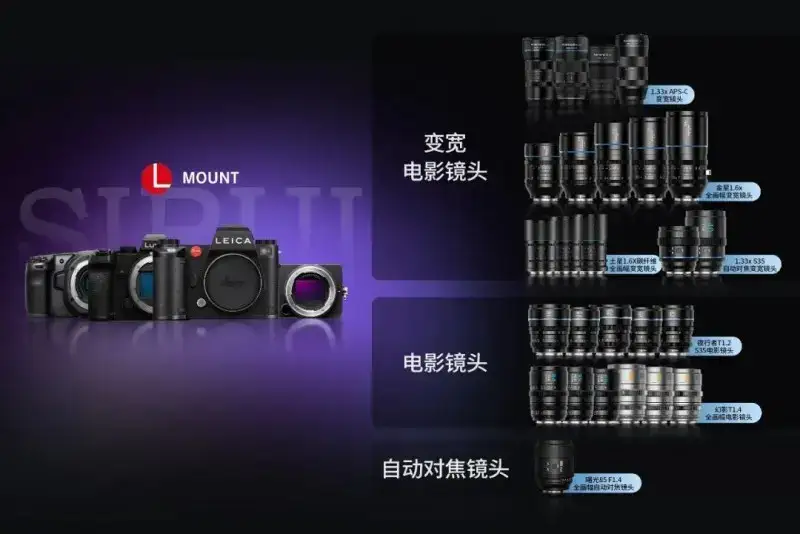
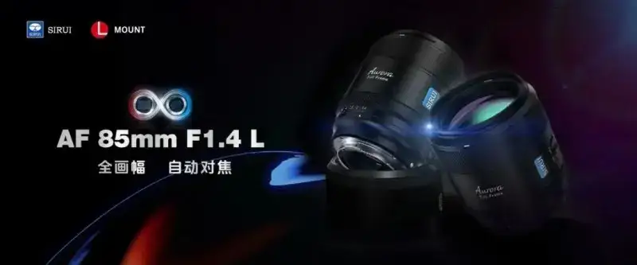
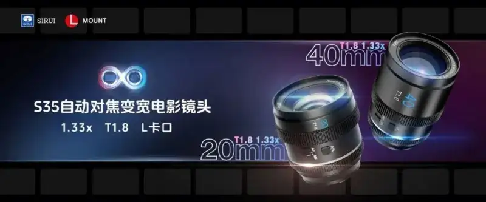

On March 20, 2025, the L-Mount Alliance officially announced a new member: SIRUI.
After DJI, this is the second independent Chinese imaging brand to officially join the L-Mount. Current alliance members include Leica Camera AG, SIGMA, Panasonic, Ernst Leitz Wetzlar GmbH, DJI, ASTRODESIGN, SAMYANG Optics, Blackmagic Design, and SIRUI.



The translation of the Leica Camera AG press release is below.
WETZLAR, March 20, 2025. SIRUI becomes the ninth company to join the L-Mount Alliance since the L-Mount standard was announced at Photokina in 2018. The alliance was founded by Leica Camera AG, SIGMA, and Panasonic, and it also includes Ernst Leitz Wetzlar GmbH, DJI, ASTRODESIGN, SAMYANG Optics, and Blackmagic Design. This partnership lets SIRUI develop products that work with the L-Mount, which brings great benefits for a wide range of photo and video uses.
Leica Camera AG developed the L-Mount to give customers a mount system that is future-compatible, flexible, rugged, and precise, and that meets the strictest photography needs. Since it first appeared on the Leica T system in 2014, Leica and its strategic partners have kept pushing the L-Mount forward. After major improvements, it is now a more complete and advanced L-Mount technology. Every lens designed for the different L-Mount Alliance systems works on every L-Mount camera. You need no adapter, and you face no feature limits. This shows one of the great strengths of the L-Mount.
Valentino Di Leonardo
(Valentino Di Leonardo)
Expert in Technology and Licensing Management at Leica Camera AG
"The L-Mount Alliance stands for openness, innovation, and the highest quality in photography. We welcome SIRUI to the alliance. It brings us a strong new partner, and it shows again our commitment to a diverse, vibrant ecosystem. SIRUI brings fresh views and expertise, and it enriches the L-Mount system in a forward-looking way. We will work together to give photographers and filmmakers a system that is more complete, more flexible, and built to the highest standards."
Li Jie
Founder and CEO of SIRUI
"SIRUI is a globally known optical imaging brand. Its products cover optical lenses and photo and video gear. The company is based in China and has subsidiaries in the United States, Germany, and Japan. With its own optical R and D and manufacturing system, SIRUI has built a full chain that joins research, production, and sales. It has a sales network that covers more than 60 countries and regions. With its own brand, independent technology, a vertically integrated supply chain, and a cost advantage, SIRUI will play a key role in the L-Mount Alliance lens ecosystem. Our goal is to bring the market more excellent, high-value L-Mount lenses, and to make the system richer and more complete."
About the L-Mount Alliance
All L-Mount Alliance members use the L-Mount standard developed by Leica Camera AG, which is built for mirrorless camera systems. Current members include Leica Camera AG, SIGMA, Panasonic, Ernst Leitz Wetzlar GmbH, DJI, ASTRODESIGN, SAMYANG Optics, Blackmagic Design, and SIRUI. Alliance members use the L-Mount standard to support camera and lens products, which they sell under their own brands. Each member has its own product and market strategy, but they work closely to push L-Mount technology forward.
About the L-Mount standard
To allow the widest product range, the L-Mount has a diameter of 51.6 millimeters. This works not only for full-frame cameras but also for APS-C cameras. The short flange focal distance of only 20 millimeters cuts the gap between lens and sensor, so the lens design stays compact, which helps especially for wide-angle lenses. To hold up in extreme environments and last for long, the L-Mount camera mount is made of wear-resistant stainless steel. It has four bayonet lugs to prevent shifting and to seat the lens firmly and precisely. The standard L-Mount contact strip also keeps the electronic link between lens and camera smooth. It supports future lens firmware updates as technology advances, so you can use the full performance of the lens.
About Leica Camera
Leica Camera AG is an international maker of high-end cameras, lenses, and sports optics with more than 150 years of history. As part of its growth strategy, the company moved into mobile imaging (smartphones). It also makes high-quality eyeglass lenses and watches, and it offers projectors under its own brand for home theater.
Leica Camera AG is based in Wetzlar, Germany, and has a second production site in Vila Nova de Famalicão, Portugal. The company runs more than 120 Leica stores worldwide and has 2,400 employees. In fiscal 2023/24, it posted revenue of about 4.35 billion RMB.
The Leica brand stands for outstanding quality, German craftsmanship, and industrial design, joined with innovative technology. A key part of the brand is its support for photo culture through about 30 Leica galleries worldwide, the Leica Academy, and international awards such as the Leica Hall of Fame Award and the Leica Oskar Barnack Award (LOBA).
About SIRUI
SIRUI is a globally known optical imaging brand. In 2014 it began to shift into optical lens R and D, and it built its own optical research and production base. It is one of the few brands with its own supply chain that joins R and D, production, assembly, and sales. It has fully replaced imports in large-aperture glass aspheric molding technology. In particular, SIRUI was the first brand to bring high-end anamorphic lenses to the consumer market. It keeps a leading place in the consumer anamorphic cinema lens market, and it is the brand with the higher market share in Europe and the United States.

SIRUI's entry into the L-Mount Alliance will greatly raise its own lens R and D strength, lens standardization, and compatibility with alliance cameras. Through its own brand, technology, supply chain, and cost advantage, it will greatly enrich the L-Mount lens ecosystem. It will bring more high-quality, high-value, lightweight lenses, and drive major growth in high-end imaging around the world.
This will also break the old image of Chinese lenses as "cheap and low-end." It will push Chinese imaging brands to raise their technology, help the Chinese imaging industry grow together, and end the long monopoly of German and Japanese brands.

At the same time, SIRUI officially released three L-Mount autofocus lenses: the Shuguang 85mm F1.4 full-frame autofocus lens, the 40mm T1.8 1.33x S35 autofocus anamorphic cinema lens, and the 20mm T1.8 1.33x S35 autofocus anamorphic cinema lens. This makes creation by L-Mount users lighter and faster. SIRUI will keep releasing more great L-Mount lenses. Stay tuned.

